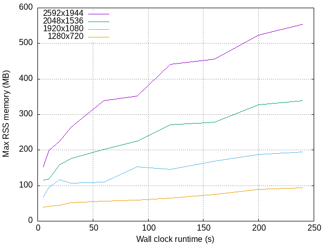
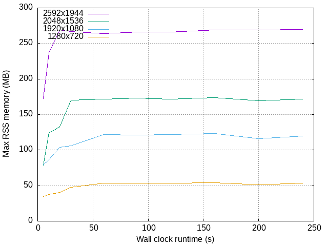

siiky
2023/08/29
2023/08/29
en
Wrote a program at $JOB that, for each frame obtained from a camera, tries to scan barcodes. The purpose was to replace a handful of libraries not compatible with Node.js v18[^0]. The Node.js controller program spawns this other program (camera-streamer), passing some static parameters as program arguments, and otherwise communicating through stdin/stdout. It's a simple solution and I'm pretty happy with it[^1].
We wanted something compiled and relatively fast (though almost anything would be better than JS), and with good C interop because of the libs we used underneath. We chose Go. It's an annoying language, but I can't say it was a bad choice in the end. Message passing in Go is (almost) a gift from Joe Armstrong himself (if it wasn't so dumbbed down), and makes concurrency super easy (though not reliable)!
At some point I suspected a memory leak. The glue C code is very simple, simple enough I carefully analyzed, and covered all cases[^2]. Still, there were signs of a memory leak. I got valgrind out, and no matter what I did, no leaks detected. I searched around at the time and read comments saying that Go's GC likes to hang on to objects for longer than one would expect. Case closed!
Or is it? Yesterday I left it running for a good few minutes and memory usaged climbed to over 1.6GB[^3]! This is a no-go (hah!) so I'm back investigating today. I started by searching around for anything memory-related, with the GC idea in mind:
Nothing useful. So I turned back on no-memleaks-for-sure and collected some stats:
for formatid in 0 1 2 5; do
for timeout in 5 10 20 30 60 90 120 160 200 240; do
echo "${formatid}" | /usr/bin/time -f "format:${formatid} timeout:${timeout}s %M" timeout "${timeout}s" ./camera-streamer /dev/video0 zxing 10 QRCode;
done;
done 2>&1 | rg --color=never '^format:\d+\ttimeout:\d+s\t\d+$' | sed 's/^format://; s/timeout://; s/s//; s/kB$$//;' > rss-memory-usage-raw.tsv; tput bel
This thing starts up the camera-streamer with different configs (with the camera I'm using, formatids 0, 1, 2, 5 are 2592x1944, 2048x1536, 1920x1080, 1280x720, respectively) and lets it run for a certain amount of time. Crude method (I know) and it takes a long time to run (I know) but it works well enough -- take a look at this graph:
Clearly, frame resolution affects memory usage. Here's the relevant code. jpeg is the frame we get from the camera (GC'd), and format is the name of the format we want to scan (e.g. "QRCode").
func ReadBarcode(jpeg []byte, format string) []byte {
Cjpeg := C.CBytes(jpeg)
Cjpeglen := C.uint(len(jpeg))
Cformat := C.CString(format)
return newResultFromC(C.zxing_read_barcode(Cjpeg, Cjpeglen, Cformat))
}
func newResultFromC(ptr unsafe.Pointer) []byte {
defer C.zxing_Result_Destroy(ptr)
if ptr != nil && C.zxing_Result_isValid(ptr) != 0 {
bytes := C.zxing_Result_Bytes(ptr)
size := C.zxing_Bytes_size(bytes)
data := C.zxing_Bytes_data(bytes)
return C.GoBytes(data, size)
}
return nil
}
Looks harmless, but a couple of important details are hidden here. The cgo (Go's C interop) docs suck a lot, however, you can find this crucial piece of information there:
// Go string to C string // The C string is allocated in the C heap using malloc. // It is the caller's responsibility to arrange for it to be // freed, such as by calling C.free (be sure to include stdlib.h // if C.free is needed). func C.CString(string) *C.char // Go []byte slice to C array // The C array is allocated in the C heap using malloc. // It is the caller's responsibility to arrange for it to be // freed, such as by calling C.free (be sure to include stdlib.h // if C.free is needed). func C.CBytes([]byte) unsafe.Pointer
I couldn't possibly remember now what happened when I wrote the code. I remember reading these docs, and I remember having a lot of difficulty finding anything to help using C/C++ in Go. So in the midst of confusion it's possible I glossed over or forgot about it.
format is a leak too, but it's tiny (6 bytes) when compared to the frame itself: ~20kB for 2592x1944, ~13kB for 2048x1536, ~8kB for 1920x1080, ~4kB for 1280x720. At 10 FPS, that's ~200kB/s at the highest resolution!
Here's the fixed code, and a new graph right after:
func ReadBarcode(jpeg []byte, format *C.char) []byte {
Cjpeg := C.CBytes(jpeg)
defer C.free(unsafe.Pointer(Cjpeg))
Cjpeglen := C.uint(len(jpeg))
return newResultFromC(C.zxing_read_barcode(Cjpeg, Cjpeglen, format))
}
Much better! The fact that memory usage is more or less constant after ~60s suggests the leak is solved.
However, not all memory usage is explained... Assuming memory usage stabilizes at ~60s (as seen in this last graph), and knowing that maxrss was 554MB/338MB after 240s/60s: (554MB-338MB)/(240s-60s)=1.2MB/s -- ~6x more than I expected at the highest resolution (~200kB/s)!
I'll leave that for another day.
[^0]: I managed to port 2 of them, they seem to work fine. However, the more vital one crashes, no idea why.
[^1]: Unfortunately, due to Node.js/JavaScript bullshit, communicating through stdin/stdout is not as easy as it sounds... Nonetheless, with sufficient workarounds it all works reliably.
[^2]: There are only 2 "main C entrypoints", one for each library (ZXing & supyo). Internally, each of them allocates a temporary buffer that I free as soon as it's no longer necessary (this is easily done because the C code is sequential with no branching). There's also a destructor and a couple of accessors for ZXing, but those don't seem to allocate memory outside Go's realm.
[^3]: In a realistic scenario the program won't run for more than a couple of minutes, so I expect it'd use at most ~500MB, which could maybe work but the smallest target hardware doesn't have so much memory to waste comfortably.